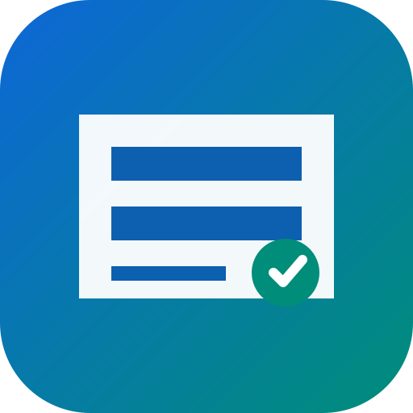

Sodegau-Ride ビジュアル版参考イラストの生活メニューや検索エリアをタップすると、下の実際の機能へ移動します。画像に含まれる文字は装飾であり、実際の検索・交通データは別のUIで提供します。
※非公式デザイン。描かれた建物・人物・UIはコンセプトです。
のぞみ野長浦線などの路線図・時刻表・運賃表を確認できます。便によって経由地・曜日・時刻が異なります。
※青と白のバスや地図はコンセプトデザインです。実車・実停留所・運行時刻の再現ではありません。
「投稿 → 整理 → 検討 → 回答」の流れをわかりやすく表示します。受付件数や回答状況の架空数値は表示しません。
このサイトは意見を送信・保存しません。実際の投稿は市の公式窓口で行います。
画像にあった「2030年67,000人」「2040年71,000人」は出典未確認のため採用しません。
架空のお知らせ日付・件数は掲載しません。情報が変化するため、必ず市の公式ページで最新情報をご確認ください。